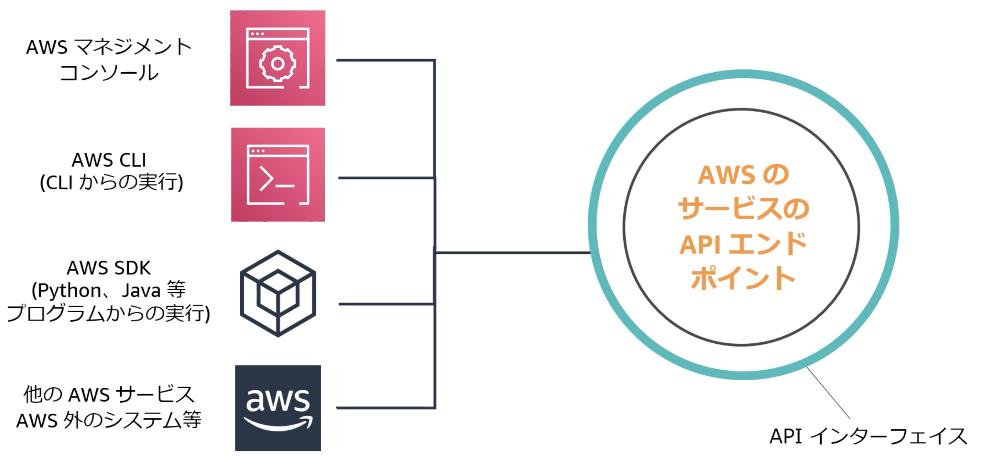
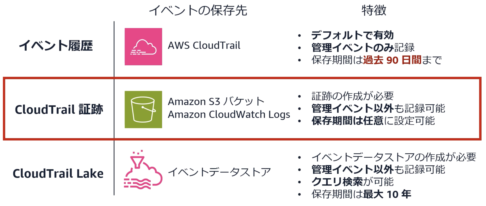
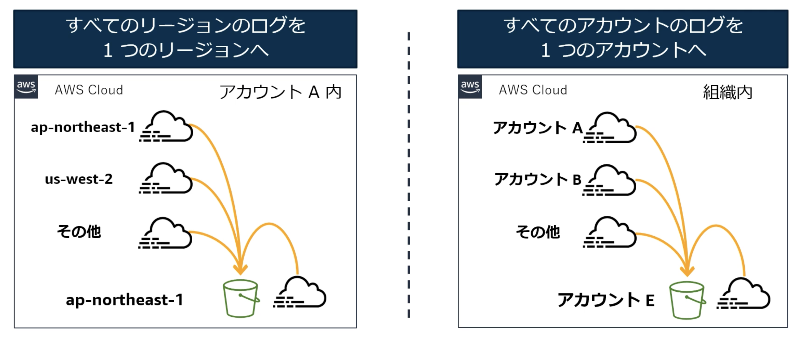

13. CloudTrail¶
AWSアカウントのガバナンス、コンプライアンス、運用・リスク監査を行うためのサービス。
CloudTrailを利用することで、AWS全体でアカウントアクティビティをログに記録することができる。
AWSアカウント上の以下のアクションのログ（CloudTrailイベント）の記録
AWS上のAPI操作の記録
IAMユーザーのサインイン
記録したイベントについては、GUI上での確認(イベント履歴)、保管(CloudTrail証跡)、クエリ検索（CloudTrail Lake）の機能が提供されている。
記録については保存されないイベントがあることや、保管に関してはデフォルトで90日の保管のみであることを踏まえてCloudTrail証跡の作成が推奨されている。
13.1. CloudTrailの価値¶
CloudTrailを利用することで、「誰が」「いつ」「なにを」したかを把握することができる。
監査・事後調査
トラブルシューティング
ガバナンス: 禁止イベントのアラートetc...
といったユースケースで利用される。
13.2. CloudTrailの仕組み¶
まず、AWSの操作はGUIやCLIなどから操作されるが、これらはバックエンドでは共通的にAPI経由で提供されている。
 AWS CloudTrail 基礎編: AWS CloudTrail の役割と証跡【AWS Black Belt】
CloudTrailでは、サポートされているAPIへのイベントを記録している。また、セキュリティへの影響確認やトラブルシューティングに役立つ可能性のあるイベントについても記録している。
13.3. CloudTrailの機能¶
CloudTrailではデフォルト機能だけでなく、以下のような関連する主要な機能がある。
機能名 |
説明 |
|---|---|
イベント履歴 |
デフォルトで有効化され、無料。AWSマネジメントコンソールで過去90日までのイベントを確認可能。 |
CloudTrail 証跡 |
CloudTrailイベントをリソースとして保存し、長期保存が可能。イベント履歴では確認できないイベントも確認可能。 |
AWS CloudTrail Lake |
複数条件でログをクエリ検索でき、統計的な分析やログ探しに役立つ。 |
AWS CloudTrail Insights |
特定イベントの急増、イベント数やエラー率に関する異常検知に有用。システムの異常状態の検出に役立つ。 |
13.4. CloudTrailの記録¶
CloudTrailでは、イベント履歴、CloudTrail証跡、CloudTrailLakeという機能によりそれぞれ保管が可能。
 AWS CloudTrail 基礎編: AWS CloudTrail の役割と証跡【AWS Black Belt】
13.4.1. CloudTrail証跡¶
CloudTrail証跡についてはGUIから配信先のS3を指定することで作成が可能。 CloudTrail証跡では3つのイベントが保管される。
種類 |
説明 |
例 |
|---|---|---|
管理イベント |
コントロールプレーンオペレーション： |
ログ記録の設定、ネットワーク構成変更、コンフィグの参照、デバイスの登録 |
データイベント |
データプレーンオペレーション： |
Amazon S3でのオブジェクト操作（GetObject、DeleteObject、PutObjectなど）、Lambda関数の実行 |
インサイトイベント |
管理イベントにおける異常な傾向を検知するためのイベント。 |
リソースプロビジョニングの急上昇、IAMアクションのバースト、定期メンテナンス間のアクティビティのギャップ |
イベントの量が大量にならないように、イベントセレクターにより、対象となるイベントを絞り込むことが可能。
13.4.2. CloudTrail証跡の配信¶
CloudTrailについてはリージョナルサービスのため、リージョンごとの管理となるが煩雑性を抑制するため、複数のリージョンや複数アカウントのCloudTrail証跡を集約することができる。
 AWS CloudTrail 基礎編: AWS CloudTrail の役割と証跡【AWS Black Belt】
13.4.3. CloudTrail証跡の保護¶
CloudTrailのような重要な情報に関しては、データが失われないことや改ざんされないことが重要。 証跡の"真正性"が非常に重要になる。
CloudTrailでは真正性を担保するための機能が提供されている。 例えば、ログファイルの整合性検証では電子署名の仕組み（ハッシュ）を利用してログがCloudTrail以外で修正されていないかを検証できる。
また、S3による制御も可能。例えばバケットポリシーの利用や、KMS暗号化、バージョニング、MFA、オブジェクトロックなどが挙げられる。